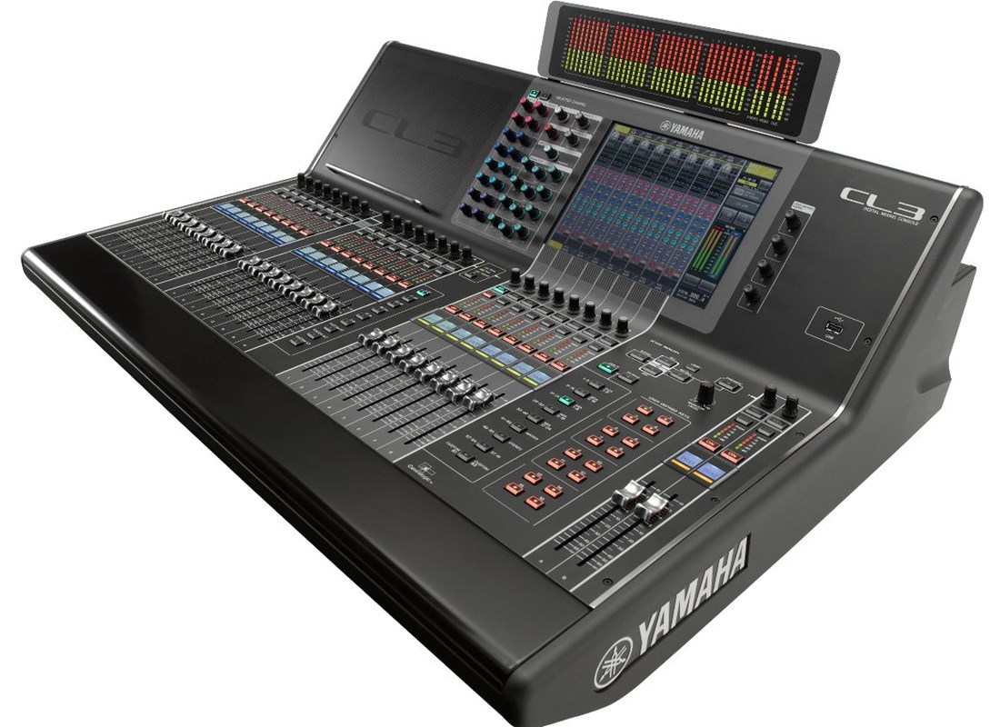

Mezcladoras
CL 3
Los estándares se mantienen, pero la innovación nunca termina. La búsqueda de la perfección es continua y probablemente nunca terminará, pero en el camino Yamaha ha introducido una serie de innovaciones que se han convertido en estándares de la industria que ofrecen rendimiento y familiaridad que los usuarios exigentes continúan exigiendo. Por definición, es mejor mantener los "estándares" tal como están. Con refinamientos evolutivos, por supuesto. Las mesas de mezclas digitales de la serie CL de Yamaha representan un nuevo nivel de refinamiento. Ofrecen una experiencia evolucionada en mezcla accesible, además de pureza sónica con capacidades de modelado de sonido que le darán al ingeniero más imaginativo una libertad creativa sin precedentes. La serie CL encarna los estándares líderes en sonido en vivo en su forma más avanzada y expresiva.
